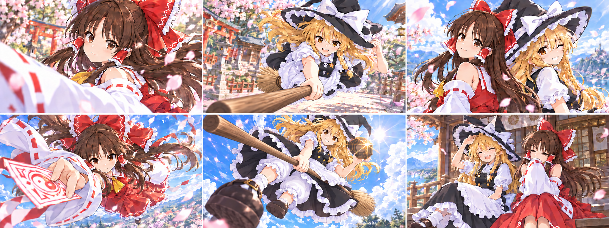
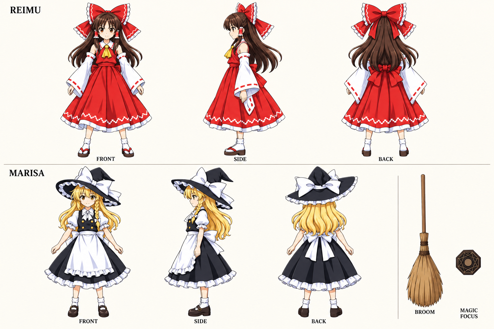
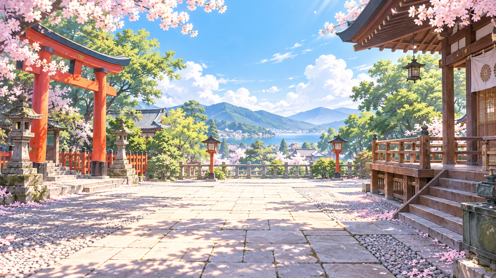
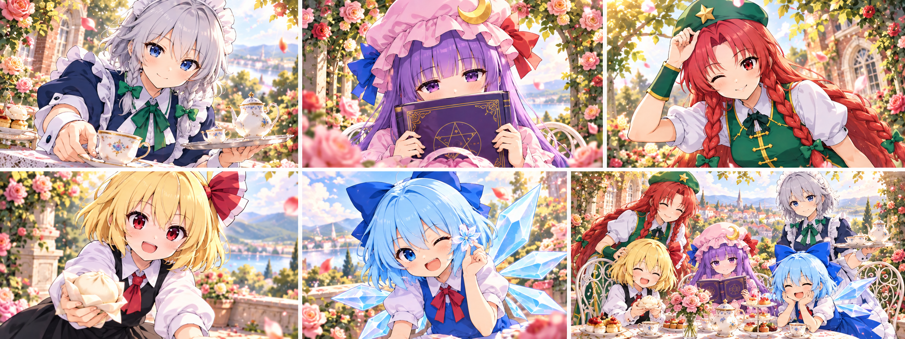
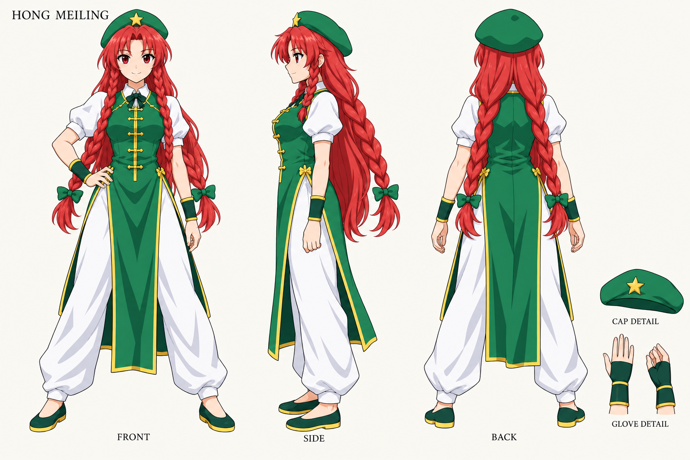
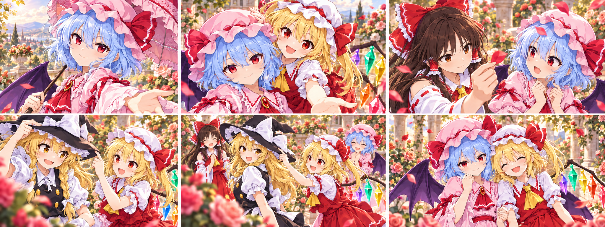
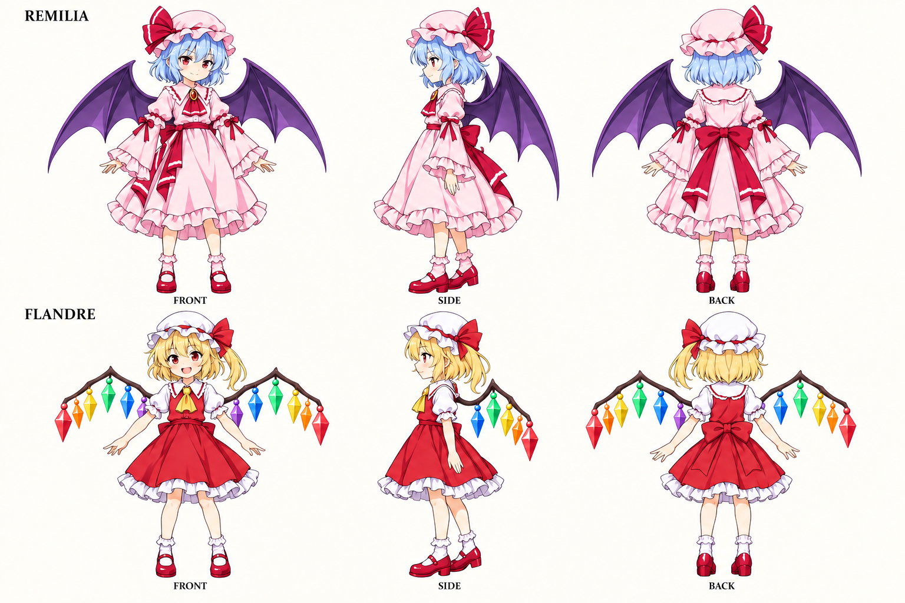
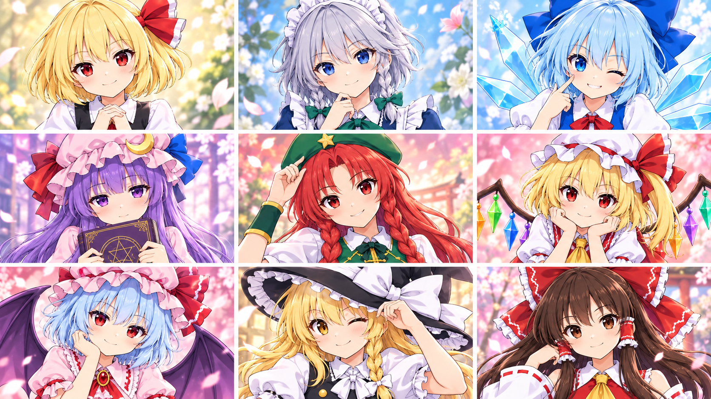

CLIP-01 / 0–10 SEC
ふたりに会いに、青空へ
笑顔と目線で登場。中盤の3秒だけ、強い遠近感の高速カットへ。最後は縁側の小さな仕草で和らげる。
- 0.00–1.50秒霊夢の振り向き
- 1.50–3.00秒魔理沙がレンズ前へ
- 3.00–5.00秒背中合わせの二人
- 5.00–6.50秒霊夢の高速すれ違い
- 6.50–8.00秒魔理沙の急な切り返し
- 8.00–10.00秒縁側のかわいいひと呼吸

参照画像の投入順
Picture 1
{kind=link}

characters-01-heroes.pngPicture 2{kind=link}

background-01-shrine.pngPicture 3background-03-sky.pngPicture 4storyboard-01.png{kind=link}
{kind=link}
English · 生成用
subject_definitions: <Subject 1> is Reimu Hakurei, the top character in <Picture 1>: long chestnut hair, brown eyes, large red-white bow, red calf-length shrine dress, yellow necktie and detached white sleeves. <Subject 2> is Marisa Kirisame, the bottom character in <Picture 1>: blonde hair with a side braid, amber eyes, black witch hat with white bow, black calf-length dress and white apron, brown broom and octagonal focus. <Subject 10> is the sunlit shrine courtyard: red torii, cherry blossoms, wooden veranda and mint-green foliage, from <Picture 2>. <Subject 11> is the open cyan sky with large white clouds and a distant tiny manor, from <Picture 3>. <Picture 4> is the clean visual board, read left-to-right and top-to-bottom, mapping [Shot 1] through [Shot 6]. It provides composition and identity cues; the written timeline supplies motion and cuts. summary: [reference generation] Create exactly 10.000 seconds, 16:9. Introduce <Subject 1> and <Subject 2> through charming looks, one lively duo pose, two spectacular flight inserts in <Subject 11>, and a playful veranda beat in <Subject 10>. This is a character-led visual-novel opening montage. <Picture 4> supplies composition; the shots jump associatively between moods. Warm smiles are the main attraction, with three seconds of bold aerial camera movement. Use bright polished 2D anime, expressive eyes and a cute, upbeat visual-novel opening mood. Each shot fills one frame as a complete scene; costumes and faces follow the model sheets. retention_analysis: <Subject 1> (appears in [Shot 1], [Shot 3], [Shot 4], [Shot 6]): fully_preserved - retain Reimu Hakurei's face, hair, headwear and costume across expressions and camera angles. <Subject 2> (appears in [Shot 2], [Shot 3], [Shot 5], [Shot 6]): fully_preserved - retain Marisa Kirisame's face, hair, headwear and costume across expressions and camera angles. <Subject 2> ([Shot 2], [Shot 5], body-relative handedness and broom): fully_preserved - her anatomical right hand stays on the shaft; her anatomical left hand handles the hat or focus as specified. In a frontal view, her right arm originates at screen-left and her left arm at screen-right. Each hand remains connected to its own shoulder through camera motion and cuts. Her right thumb opposes four curled fingers around the shaft. One continuous broom shaft leads with its bare wooden end; the tied straw bundle trails behind her hips. <Subject 10> (appears in [Shot 1], [Shot 2], [Shot 3], [Shot 6]): fully_preserved - keep the bright location design while changing framing. <Subject 11> (appears in [Shot 4], [Shot 5]): fully_preserved - keep the bright location design while changing framing. <Picture 4> (shot composition): partially_preserved - preserve panel order and character placement; follow the written camera movement and exact timing. detailed_description: Crisp cel animation, warm high-key light, expressive character acting, clean silhouettes and bright pastel accents. [Shot 1] A close three-quarter view of <Subject 1> fills the frame as her white sleeve finishes sweeping past the lens. In <Subject 10>, she turns toward us, her large red bow catching warm sunlight, and her composed face opens into a small inviting smile. Push forward a few centimeters at eye level. Cherry petals drift through the soft background; a crisp cloth swish and one light sandal tap accent her turn. [Shot 2] At 00:01.500, Cut to <Subject 2> approaching head-first beside the shrine. The bare wooden handle leads toward the lens; the straw bundle trails behind her hips. Her anatomical right hand grips the shaft, thumb opposing four curled fingers; her left hand touches the hat brim as she winks. Both wrists connect naturally to their respective forearms. Track backward at face height; braid and white bow stream behind. The handle passes beneath the lens as the courtyard slides sideways in parallax. Broom wind ends with a hat-fabric rustle. [Shot 3] At 00:03.000, Cut to a waist-up duo composition: <Subject 1> and <Subject 2> stand back-to-back, then glance toward the camera from opposite shoulders. Their red and black silhouettes form a balanced center against softly defocused cherry blossom and sky. A brisk quarter-orbit settles into their shared smile. Each holds one recognizable prop low, leaving both faces clear. A petal brushes Marisa’s hat with a tiny dry tick. [Shot 4] At 00:05.000, Cut directly into <Subject 11>: <Subject 1> sweeps diagonally past the lens, sleeve and talisman sharply foreshortened in the foreground, body receding behind. The camera whips around her shoulder as she banks around one cloud edge. Her focused eyes stay visible for an instant before she clears frame. Use a fast near-to-far change of scale and a clean air crack to convey force, keeping the action readable. [Shot 5] At 00:06.500, Reverse screen direction on the cut to <Subject 2> in low frontal flight. Her anatomical right hand keeps its shaft grip; her left holds the octagonal focus. The bare handle leads beneath the camera, straw trailing behind her hips on the same straight shaft. She banks against a huge cloud. Her single black skirt flares over opaque white drawers with separate knee-length legs and gathered cuffs. Snap-track her face, then follow her into the distance. One golden glint leaves the focus. Broom wind rises and cuts sharply. [Shot 6] At 00:08.000, Cut to the two sitting side by side on the shrine veranda, returning immediately to warm daylight and everyday charm. <Subject 2> straightens her slightly crooked hat; <Subject 1> notices and hides a small smile behind a folded sleeve. Drift gently sideways at seated eye level, keeping their faces large. Cloth, wood and leaves replace the flight roar. End on their exchanged glance at 00:10.000. overall_soundscape: Only sounds tied to the visible setting and gestures: wind, leaves, cloth, paper, porcelain and brief nonmelodic magical transients where specified. Use quiet gaps between close-up accents. No dialogue, narration, laughter, shouts, vocals or music. non_diegetic_music: None. No BGM, score, song or musical accompaniment.
日本語 · 確認用
subject_definitions: <Subject 1> は <Picture 1> の上段の博麗霊夢。長い栗色の髪、茶色の瞳、大きな赤白リボン、ふくらはぎ丈の赤い巫女服、黄色の胸元の結び、白い分離袖。 <Subject 2> は <Picture 1> の下段の霧雨魔理沙。金髪と片側の編み込み、琥珀色の瞳、白リボン付き黒い魔女帽、ふくらはぎ丈の黒い服と白エプロン、茶色の箒、八角形の魔法の道具。 <Subject 10> は <Picture 2> の日向の神社。赤い鳥居、桜、木の縁側、明るい緑の木々。 <Subject 11> は <Picture 3> の大きな白い雲と、はるか下の小さな館がある水色の空。 <Picture 4> は左から右、上段から下段へ読むクリーンな画像。[Shot 1]〜[Shot 6]の構図と人物を参照し、動きとカット時刻は文章に従う。 summary: [reference generation] 16:9、正確に10.000秒。<Subject 1> と <Subject 2> のかわいい表情、二人のポーズ、<Subject 11> での鮮烈な飛行カット、<Subject 10> の縁側の小さな仕草をつなぐ。キャラクターの魅力が主役のギャルゲーム風OP。<Picture 4> の構図を使い、連想的な編集で場所と気分を切り替える。笑顔を軸に、中盤の3秒だけ空中カメラを大胆に動かす。 明るい2Dアニメ、大きく表情豊かな瞳、ポップでかわいいギャルゲームOPの空気。各カットを一つの情景として画面いっぱいに描き、衣装と顔は設定画を保つ。 retention_analysis: <Subject 1>（[Shot 1], [Shot 3], [Shot 4], [Shot 6]）：fully_preserved - 博麗霊夢の顔、髪、髪飾り、衣装を表情や画角が変わっても保つ。 <Subject 2>（[Shot 2], [Shot 3], [Shot 5], [Shot 6]）：fully_preserved - 霧雨魔理沙の顔、髪、髪飾り、衣装を表情や画角が変わっても保つ。 <Subject 2>（[Shot 2], [Shot 5]、本人基準の左右と箒）：fully_preserved - 本人の右手が柄を握り続け、本人の左手が指定に応じて帽子または道具を扱う。正面では本人の右肩が画面左、左肩が画面右に位置する。カメラ移動とカットを通じ、各手は同じ側の肩につながる。右手の親指と巻き付けた4本の指を柄の両側へ配置。箒は一本の連続した柄で、木の先端が進行方向、束ねた穂が腰の後ろに続く。 <Subject 10>（[Shot 1], [Shot 2], [Shot 3], [Shot 6]）：fully_preserved - 明るい環境の特徴を保ち、画角を変える。 <Subject 11>（[Shot 4], [Shot 5]）：fully_preserved - 明るい環境の特徴を保ち、画角を変える。 <Picture 4>（構図参照）：partially_preserved - コマ順と人物配置を保ち、カメラの動きと正確な時刻は文章を優先。 detailed_description: 明瞭なセルアニメ、暖かく明るい光、表情の演技、読みやすい輪郭、パステル色のアクセント。 [Shot 1] <Subject 1> の白い袖がレンズ前を抜け、斜め前からの顔の寄りが現れる。<Subject 10> の日向でこちらへ振り向き、大きな赤リボンに光を受け、落ち着いた顔から小さな親しみのある笑みに変わる。目の高さで数センチだけ寄る。ぼけた背景に桜の花びら。袖の音と軽い下駄の音を振り向きに合わせる。 [Shot 2] At 00:01.500, 神社の横を頭からこちらへ近づく <Subject 2> へ切る。木の柄の先端がレンズへ向かい、穂は腰の後ろへ続く。本人の右手で柄を握り、親指と巻き付けた4本の指を向かい合わせる。左手で帽子のつばに触れてウインク。両手首はそれぞれの前腕へ自然につながる。顔の高さで後退し、編み込みと白リボンをなびかせる。柄の先端がレンズの下を通り、境内が横へ視差で流れる。箒の風の末尾に帽子の布の音。 [Shot 3] At 00:03.000, 背中合わせの <Subject 1> と <Subject 2> を腰上で捉える。二人が反対側の肩越しにこちらを見る。ぼけた桜と空を背に、赤と黒の輪郭を中央で釣り合わせる。カメラは素早く四分の一周して、二人の笑顔で止まる。小道具は顔より下で構える。花びらが魔理沙の帽子に触れる小さな音。 [Shot 4] At 00:05.000, <Subject 11> へ直接切り替え、<Subject 1> が斜めにレンズをかすめる。手前の袖と札を強い遠近感で大きく、体を奥へ小さく見せる。雲の縁でバンクする肩の周囲へカメラを素早く振る。一瞬だけ鋭い瞳を捉えて画面外へ抜く。手前から奥への大きなサイズ変化と、鋭い風の音で勢いを出し、動きは読めるようにする。 [Shot 5] At 00:06.500, カットで画面上の進行方向を反転し、低い正面から飛ぶ <Subject 2>。本人の右手は柄を握り続け、左手で八角形の道具を持つ。木の柄の先端からカメラの下へ進み、同じ一本の真っ直ぐな柄の後端にある穂が腰の後ろへ続く。巨大な雲を背にバンク。一枚の黒いスカートが広がり、不透明な白いドロワーズが見える。左右の脚に分かれた膝丈で、裾を絞った形。顔へ急追従して奥へ飛び去る動きを追う。道具が金色に一度光り、箒の風が高まって鋭く切れる。 [Shot 6] At 00:08.000, 神社の縁側に並んで座る二人へ切り、日常の暖かな光へ戻す。<Subject 2> が少し曲がった帽子を直し、<Subject 1> は気づいて袖の陰に小さな笑みを隠す。座った目の高さから穏やかに横移動し、顔を大きく保つ。飛行音を布・木・葉の音へ切り替える。二人の目線の交換で00:10.000に終了。 overall_soundscape: 見えている環境と仕草の効果音のみ。風、葉、布、紙、磁器、指定箇所の短く非旋律的な魔法音。寄りのアクセントの間は静かな余白にする。台詞、ナレーション、笑い声、掛け声、歌声、音楽はなし。 non_diegetic_music: なし。BGM、劇伴、歌、音楽の伴奏は入れない。
CLIP-02 / 10–20 SEC
好きになる、小さな仕草
視線・手元・表情で5人を紹介。トレイの円、本の縁、帽子へ形をつなぎ、最後はお茶会の一枚へ。
- 0.00–1.50秒咲夜のティーサービス
- 1.50–3.00秒本から覗くパチュリー
- 3.00–4.50秒美鈴の照れた敬礼
- 4.50–6.00秒ルーミアとおやつ
- 6.00–8.00秒チルノの氷の花
- 8.00–10.00秒五人のお茶会

参照画像の投入順
Picture 1 characters-02-rumia-cirno.pngPicture 2
characters-02-rumia-cirno.pngPicture 2 characters-04-patchouli-sakuya.pngPicture 4background-02-garden.pngPicture 5storyboard-02.png
characters-04-patchouli-sakuya.pngPicture 4background-02-garden.pngPicture 5storyboard-02.png
characters-02-rumia-cirno.pngPicture 2{kind=link}

characters-03-meiling-clean.pngPicture 3characters-04-patchouli-sakuya.pngPicture 4background-02-garden.pngPicture 5storyboard-02.png{kind=link}
{kind=link}
English · 生成用
subject_definitions: <Subject 7> is Sakuya Izayoi, the bottom character in <Picture 3>: silver bob with small braids, blue eyes, white maid headband, navy maid dress, white apron and green neck bow. <Subject 6> is Patchouli Knowledge, the top character in <Picture 3>: long purple hair, crescent pink cap, red and blue ribbons, pink-lavender striped gown and purple book. <Subject 5> is Hong Meiling, the single character character in <Picture 2>: long red hair with twin braids, green star beret, gold-trimmed green tunic, loose white trousers and green wrist guards. <Subject 3> is Rumia, the top character in <Picture 1>: blonde bob, red eyes, small red side ribbon, black dress over a white shirt with red tie. <Subject 4> is Cirno, the bottom character in <Picture 1>: ice-blue bob, blue hair bow and dress, red neck ribbon, white zigzag hem and six rigid ice-wing shards. <Subject 10> is the sunny manor rose garden, with a white tea table, cream terrace steps and soft peach-green light, from <Picture 4>. <Picture 5> is the clean visual board, read left-to-right and top-to-bottom, mapping [Shot 1] through [Shot 6]. It provides composition and identity cues; the written timeline supplies motion and cuts. summary: [reference generation] Create exactly 10.000 seconds, 16:9. Present <Subject 7>, <Subject 6>, <Subject 5>, <Subject 3> and <Subject 4> through affectionate everyday gestures around <Subject 10>. The sequence follows personality and visual match cuts, ending on their relaxed tea gathering. Use <Picture 5> for the six compositions. Bright close-ups and playful reactions create a cute character-introduction passage. Use bright polished 2D anime, expressive eyes and a cute, upbeat visual-novel opening mood. Each shot fills one frame as a complete scene; costumes and faces follow the model sheets. retention_analysis: <Subject 7> (appears in [Shot 1], [Shot 6]): fully_preserved - retain Sakuya Izayoi's face, hair, headwear and costume across expressions and camera angles. <Subject 6> (appears in [Shot 2], [Shot 6]): fully_preserved - retain Patchouli Knowledge's face, hair, headwear and costume across expressions and camera angles. <Subject 5> (appears in [Shot 3], [Shot 6]): fully_preserved - retain Hong Meiling's face, hair, headwear and costume across expressions and camera angles. <Subject 3> (appears in [Shot 4], [Shot 6]): fully_preserved - retain Rumia's face, hair, headwear and costume across expressions and camera angles. <Subject 4> (appears in [Shot 5], [Shot 6]): fully_preserved - retain Cirno's face, hair, headwear and costume across expressions and camera angles. <Subject 10> (appears in [Shot 1], [Shot 2], [Shot 3], [Shot 4], [Shot 5], [Shot 6]): fully_preserved - keep the bright location design while changing framing. <Picture 5> (shot composition): partially_preserved - preserve panel order and character placement; follow the written camera movement and exact timing. detailed_description: Crisp cel animation, warm high-key light, expressive character acting, clean silhouettes and bright pastel accents. [Shot 1] Open on the rim of a silver tray held by <Subject 7> in <Subject 10>. Tilt quickly from the cup to her blue eyes and green neck bow as she finishes setting the tray at the edge of frame. She meets the camera with an assured, gentle smile. Her small silver braids remain distinct from the maid headband. A single porcelain contact and soft apron rustle mark the movement; garden air stays light. [Shot 2] At 00:01.500, Match the tray’s bright rim to the edge of the purple book held by <Subject 6>. In a tight bust shot beneath a flowering arch, she lowers the book just enough to reveal a shy smile; long purple hair and the crescent cap frame her face. Slide a little to the right, letting blurred rose petals cross the far background. One page flutters and settles, creating a small dry sound. [Shot 3] At 00:03.000, Cut to <Subject 5> framed from the waist up beside a sunlit hedge, green star beret and twin red braids clearly visible. A petal rests on her cap. She notices our gaze, gives a slightly embarrassed smile and a quick friendly salute. The camera makes a short upward bounce and settles at eye level. Her tunic remains green and gold; loose white trousers briefly appear at the lower edge. Cloth and a leaf rustle accompany her. [Shot 4] At 00:04.500, Cut to <Subject 3> holding a small steamed bun in both hands beneath her chin. She tilts her blonde bob toward the lens with a delighted closed-mouth expression; her red side ribbon and white collar stand out against a soft peach garden background. Push in a little as she offers the bun forward, keeping her hands and face anatomically clear. A paper wrapper gives one delicate crinkle. [Shot 5] At 00:06.000, Cut to <Subject 4> proudly lifting a tiny ice flower between thumb and forefinger. A chest-up camera arc catches blue hair, red neck ribbon and the six translucent wing shards behind her. She gives an exaggerated confident wink while the flower briefly glitters in sunlight. Keep its scale small and charming. A crisp ice tick and a light sleeve swish punctuate the pose, followed by ordinary garden wind. [Shot 6] At 00:08.000, Cut wider to the five together around the white tea table: <Subject 7> stands at the right with the tray, <Subject 6> sits centrally with her book, <Subject 5> leans near the left chair, while <Subject 3> and <Subject 4> share the foreground. They exchange small smiles and glance toward us. Pull back gently enough to retain readable faces and the bright rose-garden atmosphere. End on this friendly ensemble at 00:10.000, with porcelain, pages and leaves. overall_soundscape: Only sounds tied to the visible setting and gestures: wind, leaves, cloth, paper, porcelain and brief nonmelodic magical transients where specified. Use quiet gaps between close-up accents. No dialogue, narration, laughter, shouts, vocals or music. non_diegetic_music: None. No BGM, score, song or musical accompaniment.
日本語 · 確認用
subject_definitions: <Subject 7> は <Picture 3> の下段の十六夜咲夜。銀髪ボブと小さな編み込み、青い瞳、白いメイドの髪飾り、紺の服、白いエプロン、緑の胸リボン。 <Subject 6> は <Picture 3> の上段のパチュリー・ノーレッジ。長い紫髪、三日月飾りの桃色帽、赤青のリボン、桃色と薄紫の縦縞の長衣、紫の本。 <Subject 5> は <Picture 2> の唯一の人物の紅美鈴。長い赤髪と二本の編み込み、星付き緑帽、金縁の緑の長衣、ゆったりした白ズボン、緑の手甲。 <Subject 3> は <Picture 1> の上段のルーミア。金髪ボブ、赤い瞳、小さな赤い横リボン、白シャツと赤ネクタイ、黒いワンピース。 <Subject 4> は <Picture 1> の下段のチルノ。水色ボブ、青い髪リボンと服、赤い胸リボン、白い山形の裾、左右3本ずつの氷の翼。 <Subject 10> は <Picture 4> の日向の館のバラ庭園。白い茶卓、クリーム色の段差、桃色と緑の柔らかな光。 <Picture 5> は左から右、上段から下段へ読むクリーンな画像。[Shot 1]〜[Shot 6]の構図と人物を参照し、動きとカット時刻は文章に従う。 summary: [reference generation] 16:9、正確に10.000秒。<Subject 10> の周りで、<Subject 7>、<Subject 6>、<Subject 5>、<Subject 3>、<Subject 4> の日常の仕草を親しみやすく見せる。性格と画面内の形をつなぐ編集で進み、和やかなお茶会へ着地する。6つの構図は <Picture 5>。明るい寄りと小さな反応で、かわいいキャラクター紹介を作る。 明るい2Dアニメ、大きく表情豊かな瞳、ポップでかわいいギャルゲームOPの空気。各カットを一つの情景として画面いっぱいに描き、衣装と顔は設定画を保つ。 retention_analysis: <Subject 7>（[Shot 1], [Shot 6]）：fully_preserved - 十六夜咲夜の顔、髪、髪飾り、衣装を表情や画角が変わっても保つ。 <Subject 6>（[Shot 2], [Shot 6]）：fully_preserved - パチュリー・ノーレッジの顔、髪、髪飾り、衣装を表情や画角が変わっても保つ。 <Subject 5>（[Shot 3], [Shot 6]）：fully_preserved - 紅美鈴の顔、髪、髪飾り、衣装を表情や画角が変わっても保つ。 <Subject 3>（[Shot 4], [Shot 6]）：fully_preserved - ルーミアの顔、髪、髪飾り、衣装を表情や画角が変わっても保つ。 <Subject 4>（[Shot 5], [Shot 6]）：fully_preserved - チルノの顔、髪、髪飾り、衣装を表情や画角が変わっても保つ。 <Subject 10>（[Shot 1], [Shot 2], [Shot 3], [Shot 4], [Shot 5], [Shot 6]）：fully_preserved - 明るい環境の特徴を保ち、画角を変える。 <Picture 5>（構図参照）：partially_preserved - コマ順と人物配置を保ち、カメラの動きと正確な時刻は文章を優先。 detailed_description: 明瞭なセルアニメ、暖かく明るい光、表情の演技、読みやすい輪郭、パステル色のアクセント。 [Shot 1] <Subject 10> で <Subject 7> が持つ銀のトレイの縁から始める。カップから青い瞳と緑の胸リボンへ素早くティルトし、トレイを画面の端に置き終えた姿を見せる。こちらを見て、落ち着いた柔らかな笑み。銀髪の小さな編み込みとメイドの髪飾りを描き分ける。磁器が一度触れる音とエプロンの擦れる音、軽い庭の空気。 [Shot 2] At 00:01.500, トレイの明るい縁から <Subject 6> の紫の本の縁へ形を合わせて切る。花のアーチの下で胸上に寄り、本を少し下げて内気な笑みを見せる。長い紫髪と三日月の帽子で顔を囲む。少し右へ移動し、奥にぼけたバラの花びらを流す。ページが一枚揺れて落ち着く乾いた小さな音。 [Shot 3] At 00:03.000, 日向の生垣の横の <Subject 5> を腰上で捉える。星付き緑帽と二本の赤い編み込み。帽子に花びらが一枚載っている。こちらの目線に気づき、少し照れた笑みから親しみのある短い敬礼へ。カメラは小さく上へ弾んで目の高さに止まる。緑と金の長衣、画面下には白いズボンを一瞬見せる。布と葉の音。 [Shot 4] At 00:04.500, 小さな蒸し饅頭を両手で顎の下に持つ <Subject 3> へ切る。金髪ボブをレンズへ傾け、口を閉じた嬉しそうな顔。桃色にぼけた庭を背に、赤い横リボンと白襟を見せる。饅頭を少しこちらへ差し出す動きに合わせて寄り、手と顔を明瞭に保つ。包み紙が一度だけ小さく鳴る。 [Shot 5] At 00:06.000, <Subject 4> が指先に小さな氷の花を誇らしく掲げる寄りへ切る。胸上を回り込む短いカメラで青髪、赤い胸リボン、背後の6本の氷の翼を捉える。花が日光にきらめき、大げさに自信満々のウインクをする。氷の花は小さくかわいらしい大きさ。氷の澄んだ短い音と袖の音、続いて普通の庭の風。 [Shot 6] At 00:08.000, 白い茶卓を囲む5人へ引く。右にトレイを持つ <Subject 7>、中央に本を持って座る <Subject 6>、左の椅子のそばに寄る <Subject 5>。手前に <Subject 3> と <Subject 4>。小さな笑顔を交わしてこちらを見る。顔を読める大きさに残し、明るい庭の空気を保って穏やかに引く。磁器、本、葉の音と共に、親しみのある集合構図で00:10.000に終了。 overall_soundscape: 見えている環境と仕草の効果音のみ。風、葉、布、紙、磁器、指定箇所の短く非旋律的な魔法音。寄りのアクセントの間は静かな余白にする。台詞、ナレーション、笑い声、掛け声、歌声、音楽はなし。 non_diegetic_music: なし。BGM、劇伴、歌、音楽の伴奏は入れない。
CLIP-03 / 20–30 SEC
いたずらに、笑顔がこぼれる
日向の庭園で4人がじゃれ合う。花びらや指先から瞳へのピント送り、短い回り込み、手前のバラを横切る横移動で奥行きと楽しさを出す。最後は姉妹の笑顔に寄って落ち着く。
- 0.00–1.50秒日傘から瞳へピント送り
- 1.50–3.00秒フランがカメラへ覗き込む
- 3.00–4.50秒霊夢が帽子の花びらを取る
- 4.50–6.00秒フランと魔理沙の帽子いたずら
- 6.00–7.50秒バラ越しに四人のじゃれ合い
- 7.50–10.00秒姉妹の笑顔へゆっくり寄る

参照画像の投入順
Picture 1characters-01-heroes.pngPicture 2
{kind=link}

characters-05-scarlet-sisters-corrected.pngPicture 3background-02-garden.pngPicture 4storyboard-03.png{kind=link}
English · 生成用
subject_definitions: <Subject 8> is Remilia Scarlet, the top character in <Picture 2>: short light-blue hair, red eyes, pink frilled cap and dress with long bell sleeves, crimson bows and one pair of purple membrane bat wings. <Subject 9> is Flandre Scarlet, the bottom character in <Picture 2>: blonde side ponytail, red eyes, white cap with red bow, red dress and yellow necktie, dark wing spars with hanging rainbow crystals. <Subject 1> is Reimu Hakurei, the top character in <Picture 1>: long chestnut hair, brown eyes, large red-white bow, red calf-length shrine dress, yellow necktie and detached white sleeves. <Subject 2> is Marisa Kirisame, the bottom character in <Picture 1>: blonde hair with a side braid, amber eyes, black witch hat with white bow, black calf-length dress and white apron. <Subject 10> is the warm manor garden terrace with rose petals, pale stone and layered foreground flowers, from <Picture 3>. <Picture 4> is the clean visual board, read left-to-right and top-to-bottom, mapping [Shot 1] through [Shot 6]. It provides composition and identity cues; the written timeline supplies motion and cuts. summary: [reference generation] Create exactly 10.000 seconds, 16:9. Show <Subject 8>, <Subject 9>, <Subject 1> and <Subject 2> sharing gentle, mischievous play in <Subject 10>. Use <Picture 4> for the six compositions. A petal taken from a cap, a teasing hat-brim nudge and one playful sidestep create an affectionate character passage. Motivate focus changes with each gesture and its smiling reaction; use short arcs, gentle pullbacks and lateral flower parallax. Finish on the sisters leaning together. Use bright polished 2D anime, expressive eyes and a cute, upbeat visual-novel opening mood. Each shot fills one frame as a complete scene; costumes and faces follow the model sheets. retention_analysis: <Subject 8> (appears in [Shot 1], [Shot 2], [Shot 3], [Shot 5], [Shot 6]): fully_preserved - retain Remilia Scarlet's face, hair, headwear and costume across expressions and camera angles. <Subject 9> (appears in [Shot 2], [Shot 4], [Shot 5], [Shot 6]): fully_preserved - retain Flandre Scarlet's face, hair, headwear and costume across expressions and camera angles. <Subject 1> (appears in [Shot 3], [Shot 5]): fully_preserved - retain Reimu Hakurei's face, hair, headwear and costume across expressions and camera angles. <Subject 2> (appears in [Shot 4], [Shot 5]): fully_preserved - retain Marisa Kirisame's face, hair, headwear and costume across expressions and camera angles. <Subject 2> and <Subject 9> ([Shot 4] hat interaction): fully_preserved - Marisa lifts the front brim with her anatomical right hand; Flandre nudges the outer brim with her own right index finger. Their other hands stay low, each wrist continuous with its own forearm. Keep their faces recognizable through the focus shift. <Subject 10> (appears in [Shot 1], [Shot 2], [Shot 3], [Shot 4], [Shot 5], [Shot 6]): fully_preserved - keep the bright location design while changing framing. <Picture 4> (shot composition): partially_preserved - preserve panel order and character placement; follow the written camera movement and exact timing. detailed_description: Crisp cel animation, warm high-key light, expressive character acting, clean silhouettes and bright pastel accents. [Shot 1] Begin close to the rose-colored parasol rim in <Subject 10>, its fabric briefly sharp. It sweeps aside to reveal <Subject 8>, blue bob and pink cap glowing in warm light. Smoothly transfer focus from the near rim to her red eyes as she tilts her chin with a confident little smile. Arc a few degrees at eye level and settle on her face. A purple bat-wing edge frames her shoulder; parasol cloth and a tiny handle click accent the reveal. [Shot 2] At 00:01.500, Cut closer as <Subject 9> peeks around her sister’s shoulder toward the lens. Her side ponytail bounces once, white cap and red bow clearly separate from Remilia’s pink cap. Ease backward twenty centimeters as she comes nearer, transferring focus from her sister to Flandre’s mischievous eyes. Keep the near cheek crisp and the rose garden softly blurred. Rainbow crystals remain behind her shoulders. A sleeve swish and two small crystal clicks accompany the playful intrusion. [Shot 3] At 00:03.000, Cut to <Subject 1> at left and <Subject 8> at right in an intimate garden two-shot. Reimu gently lifts one rose petal from Remilia’s cap and shows it between her fingertips. Start focused on the petal, then shift to Remilia’s eyes as she leans back slightly with an amused, mock-surprised blink. Reimu smiles at her reaction. Make a small sideways arc, preserving both faces and separate hands. A delicate fabric brush and leaves provide the accent. [Shot 4] At 00:04.500, Cut to <Subject 2> at left and <Subject 9> at right. Flandre lightly nudges the outer hat brim with her right index finger; Marisa lifts its front edge with her own right hand and reveals an amused grin. Their other hands rest low. Slide gently sideways, first focusing on the fingertip and brim, then on Marisa’s eyes as they appear. Keep wrists connected naturally to their own arms. A soft hat-fabric tap punctuates this friendly tease. [Shot 5] At 00:06.000, Widen to a waist-up group: Marisa foreground left, Flandre foreground right, Reimu rear left and Remilia rear right. Marisa takes one playful sidestep as Flandre reaches toward the hat, smiling over her shoulder. Reimu and Remilia exchange delighted looks. Track sideways behind a nearby rose cluster, letting its soft blur briefly skim the frame edge before revealing all four. Settle with every face readable at moderate depth of field. One light footstep, leaves and cloth carry the motion. [Shot 6] At 00:07.500, Cut to <Subject 8> and <Subject 9> shoulder to shoulder. Flandre leans affectionately toward Remilia, whose poised expression melts into a smile. Begin on a nearby crystal glint, then transfer focus to both faces on the same plane while slowly pushing in. Their distinct wings frame the warm garden bokeh. Settle the camera as both look toward us; hold the shared smile through 00:10.000. A soft crystal tick and garden breeze finish the moment. overall_soundscape: Quiet garden air, leaves, soft sleeves, parasol and hat fabric, one light footstep and tiny physical crystal clicks. Match each accent to the visible gesture and leave gentle gaps. Smiles and playful reactions are silent. No dialogue, narration, laughter, shouts, vocals or music. non_diegetic_music: None. No BGM, score, song or musical accompaniment.
日本語 · 確認用
subject_definitions: <Subject 8> は <Picture 2> の上段のレミリア・スカーレット。短い水色髪、赤い瞳、淡桃色のフリル帽と長いベル袖の服、紅いリボン、一対の紫の膜状のコウモリ翼。 <Subject 9> は <Picture 2> の下段のフランドール・スカーレット。金髪の横ポニーテール、赤い瞳、赤リボン付き白帽、赤い服と黄色の胸元の結び、虹色の結晶を下げた暗色の翼の枝。 <Subject 1> は <Picture 1> の上段の博麗霊夢。長い栗色の髪、茶色の瞳、大きな赤白リボン、ふくらはぎ丈の赤い巫女服、黄色の胸元の結び、白い分離袖。 <Subject 2> は <Picture 1> の下段の霧雨魔理沙。金髪と片側の編み込み、琥珀色の瞳、白リボン付き黒い魔女帽、ふくらはぎ丈の黒い服と白エプロン。 <Subject 10> は <Picture 3> のバラの花びら、淡い石の段差、手前の花々がある暖かな館の庭園。 <Picture 4> は左から右、上段から下段へ読むクリーンな画像。[Shot 1]〜[Shot 6]の構図と人物を参照し、動きとカット時刻は文章に従う。 summary: [reference generation] 16:9、正確に10.000秒。<Subject 10> で <Subject 8>、<Subject 9>、<Subject 1>、<Subject 2> が親しげにじゃれ合う。6つの構図は <Picture 4>。帽子の花びらを取る、帽子のつばをちょんと押す、笑顔で一歩かわす仕草で仲のよさを見せる。仕草と相手の表情に合わせてピントを送り、短い回り込み、緩い引き、手前の花の視差を使う。最後は肩を寄せる姉妹へ。 明るい2Dアニメ、大きく表情豊かな瞳、ポップでかわいいギャルゲームOPの空気。各カットを一つの情景として画面いっぱいに描き、衣装と顔は設定画を保つ。 retention_analysis: <Subject 8>（[Shot 1], [Shot 2], [Shot 3], [Shot 5], [Shot 6]）：fully_preserved - レミリア・スカーレットの顔、髪、髪飾り、衣装を表情や画角が変わっても保つ。 <Subject 9>（[Shot 2], [Shot 4], [Shot 5], [Shot 6]）：fully_preserved - フランドール・スカーレットの顔、髪、髪飾り、衣装を表情や画角が変わっても保つ。 <Subject 1>（[Shot 3], [Shot 5]）：fully_preserved - 博麗霊夢の顔、髪、髪飾り、衣装を表情や画角が変わっても保つ。 <Subject 2>（[Shot 4], [Shot 5]）：fully_preserved - 霧雨魔理沙の顔、髪、髪飾り、衣装を表情や画角が変わっても保つ。 <Subject 2> と <Subject 9>（[Shot 4] 帽子のやり取り）：fully_preserved - 魔理沙は本人の右手で帽子の前の縁を持ち上げ、フランは本人の右手人差し指で外側を軽く押す。二人の反対の手は低く保ち、各手首を自分の前腕へつなげる。ピント送りの間も人物を識別できる顔を保つ。 <Subject 10>（[Shot 1], [Shot 2], [Shot 3], [Shot 4], [Shot 5], [Shot 6]）：fully_preserved - 明るい環境の特徴を保ち、画角を変える。 <Picture 4>（構図参照）：partially_preserved - コマ順と人物配置を保ち、カメラの動きと正確な時刻は文章を優先。 detailed_description: 明瞭なセルアニメ、暖かく明るい光、表情の演技、読みやすい輪郭、パステル色のアクセント。 [Shot 1] <Subject 10> で、バラ色の日傘の縁を近くから捉え、最初だけ布にピントを置く。縁が横へ抜け、水色ボブと桃色帽に暖かな光を受けた <Subject 8> が現れる。手前の傘から赤い瞳へ滑らかにピントを送り、顎を少し傾けた自信のある笑みを見せる。目の高さで数度だけ回り込み、顔で止める。肩の紫の翼、傘の布、柄の小さな音。 [Shot 2] At 00:01.500, 姉の肩越しに <Subject 9> がレンズを覗く寄りへ切る。横ポニーテールが一度弾み、白帽と赤リボンをレミリアの桃色帽から描き分ける。近づく動きに合わせて20センチほど緩く引き、姉からフランのいたずらっぽい瞳へピントを送る。近い頬を明瞭に保ち、庭のバラは柔らかくぼかす。虹色の結晶は肩の後ろ。袖の音と結晶が二度触れる小さな音。 [Shot 3] At 00:03.000, 庭園の親密な二人のカットへ。左に <Subject 1>、右に <Subject 8>。霊夢がレミリアの帽子から花びらを一枚そっと取り、指先で見せる。最初は花びらにピントを置き、レミリアが少し身を引いておどけた驚きのまばたきをする瞳へ送る。霊夢はその反応に笑顔を返す。横へ小さく回り込み、両方の顔と手を描き分ける。かすかな布の擦れと葉の音。 [Shot 4] At 00:04.500, 左の <Subject 2> と右の <Subject 9> へ切る。フランが本人の右手人差し指で帽子のつばの外側を軽く押し、魔理沙は本人の右手で前の縁を持ち上げ、楽しげな笑みを見せる。それぞれ反対の手は低い位置。ゆっくり横移動し、指先とつばから、現れた魔理沙の瞳へピントを移す。手首はそれぞれの腕へ自然につなげる。帽子の布の小さな音で、親しげないたずらを刻む。 [Shot 5] At 00:06.000, 腰上の4人へ引く。手前左に魔理沙、手前右にフラン、奥左に霊夢、奥右にレミリア。フランが帽子へ手を伸ばし、魔理沙は一歩だけ横へかわしながら肩越しに笑う。霊夢とレミリアが楽しそうに目を合わせる。近くのバラの陰を横移動し、柔らかな前ぼけが画面の縁を短くかすめた後、4人を見せる。中程度の被写界深度で全員の顔が読める位置へ止める。一度の軽い足音、葉、衣擦れ。 [Shot 6] At 00:07.500, 肩を並べる <Subject 8> と <Subject 9> へ切る。フランが親しげに寄り、レミリアの澄ました表情が笑みにほどける。手前の結晶のきらめきから、同じ距離にある二人の顔へピントを送り、ゆっくり寄る。異なる翼が暖かな庭のぼけを縁取る。二人がこちらを見るところでカメラを落ち着かせ、00:10.000まで笑顔を保つ。小さな結晶音と庭の風で締める。 overall_soundscape: 静かな庭の風、葉、柔らかな袖、日傘と帽子の布、一度の軽い足音、小さな結晶同士の接触音。見える仕草に合わせ、穏やかな余白を残す。笑顔やじゃれ合いの反応は声を出さず表情で示す。台詞、ナレーション、笑い声、掛け声、歌声、音楽はなし。 non_diegetic_music: なし。BGM、劇伴、歌、音楽の伴奏は入れない。
CLIP-04 / 30–40 SEC
ひとりずつ、そしてみんなで
9人を一人0.75秒の顔アップで切り替える。6.75秒から9人集合へ。最後の3.25秒は同じ集合構図で締める。
- 0.00–0.75秒ルーミア
- 0.75–1.50秒咲夜
- 1.50–2.25秒チルノ
- 2.25–3.00秒パチュリー
- 3.00–3.75秒美鈴
- 3.75–4.50秒フランドール
- 4.50–5.25秒レミリア
- 5.25–6.00秒魔理沙
- 6.00–6.75秒霊夢
- 6.75–10.00秒9人の集合絵

上の9コマが順番の顔アップ。その後、下の集合構図へ切り替えて終了します。
参照画像の投入順
Picture 1characters-01-heroes.pngPicture 2characters-02-rumia-cirno.pngPicture 3characters-03-meiling-clean.pngPicture 4characters-04-patchouli-sakuya.pngPicture 5characters-05-scarlet-sisters-corrected.pngPicture 6storyboard-04-portraits.pngPicture 7final-ensemble.png
characters-02-rumia-cirno.pngPicture 3characters-03-meiling-clean.pngPicture 4characters-04-patchouli-sakuya.pngPicture 5characters-05-scarlet-sisters-corrected.pngPicture 6storyboard-04-portraits.pngPicture 7final-ensemble.png{kind=link}
{kind=link}
English · 生成用
subject_definitions: <Subject 3> is Rumia, the top character in <Picture 2>: blonde bob, red eyes, small red side ribbon, black dress over a white shirt with red tie. <Subject 7> is Sakuya Izayoi, the bottom character in <Picture 4>: silver bob with small braids, blue eyes, white maid headband, navy maid dress, white apron and green neck bow. <Subject 4> is Cirno, the bottom character in <Picture 2>: ice-blue bob, blue hair bow and dress, red neck ribbon, white zigzag hem and six rigid ice-wing shards. <Subject 6> is Patchouli Knowledge, the top character in <Picture 4>: long purple hair, crescent pink cap, red and blue ribbons, pink-lavender striped gown and purple book. <Subject 5> is Hong Meiling, the single character character in <Picture 3>: long red hair with twin braids, green star beret, gold-trimmed green tunic, loose white trousers and green wrist guards. <Subject 9> is Flandre Scarlet, the bottom character in <Picture 5>: blonde side ponytail, red eyes, white cap with red bow, red dress and yellow necktie, dark wing spars with hanging rainbow crystals. <Subject 8> is Remilia Scarlet, the top character in <Picture 5>: short light-blue hair, red eyes, pink frilled cap and dress with long bell sleeves, crimson bows and one pair of purple membrane bat wings. <Subject 2> is Marisa Kirisame, the bottom character in <Picture 1>: blonde hair with a side braid, amber eyes, black witch hat with white bow, black calf-length dress and white apron, brown broom and octagonal focus. <Subject 1> is Reimu Hakurei, the top character in <Picture 1>: long chestnut hair, brown eyes, large red-white bow, red calf-length shrine dress, yellow necktie and detached white sleeves. <Subject 10> is the sunlit rose-garden setting and two-row cast arrangement of the final ensemble illustration, from <Picture 7>. <Picture 6> is the clean visual board, read left-to-right and top-to-bottom, mapping the first nine portrait shots. It provides composition and identity cues; the written timeline supplies motion and cuts. <Picture 7> is the final ensemble composition anchor for [Shot 10], with all nine cast members together. summary: [reference generation + keyframe completion] Create exactly 10.000 seconds, 16:9. Give all nine characters separate direct-to-camera close-ups in this exact order: <Subject 3>, <Subject 7>, <Subject 4>, <Subject 6>, <Subject 5>, <Subject 9>, <Subject 8>, <Subject 2>, <Subject 1>. Each portrait lasts 0.750 seconds and uses the corresponding panel of <Picture 6>. At 00:06.750 cut to the complete nine-person ensemble in <Subject 10>, converging on <Picture 7> through the end at 00:10.000. This group image is the final shot of the opening. Use bright polished 2D anime, expressive eyes and a cute, upbeat visual-novel opening mood. Each shot fills one frame as a complete scene; costumes and faces follow the model sheets. retention_analysis: <Subject 3> (appears in [Shot 1], [Shot 10]): fully_preserved - retain Rumia's face, hair, headwear and costume across expressions and camera angles. <Subject 7> (appears in [Shot 2], [Shot 10]): fully_preserved - retain Sakuya Izayoi's face, hair, headwear and costume across expressions and camera angles. <Subject 4> (appears in [Shot 3], [Shot 10]): fully_preserved - retain Cirno's face, hair, headwear and costume across expressions and camera angles. <Subject 6> (appears in [Shot 4], [Shot 10]): fully_preserved - retain Patchouli Knowledge's face, hair, headwear and costume across expressions and camera angles. <Subject 5> (appears in [Shot 5], [Shot 10]): fully_preserved - retain Hong Meiling's face, hair, headwear and costume across expressions and camera angles. <Subject 9> (appears in [Shot 6], [Shot 10]): fully_preserved - retain Flandre Scarlet's face, hair, headwear and costume across expressions and camera angles. <Subject 8> (appears in [Shot 7], [Shot 10]): fully_preserved - retain Remilia Scarlet's face, hair, headwear and costume across expressions and camera angles. <Subject 2> (appears in [Shot 8], [Shot 10]): fully_preserved - retain Marisa Kirisame's face, hair, headwear and costume across expressions and camera angles. <Subject 1> (appears in [Shot 9], [Shot 10]): fully_preserved - retain Reimu Hakurei's face, hair, headwear and costume across expressions and camera angles. <Subject 10> (appears in [Shot 10]): fully_preserved - keep the bright location design while changing framing. <Picture 6> (shot composition): partially_preserved - preserve panel order and character placement; follow the written camera movement and exact timing. <Picture 7> ([Shot 10] final frame): fully_preserved - retain the complete cast, two-row arrangement and friendly expressions. detailed_description: Crisp cel animation, warm high-key light, expressive character acting, clean silhouettes and bright pastel accents. [Shot 1] Open on <Subject 3> in a tight face close-up matching the first panel of <Picture 6>. Blonde bob and red side ribbon frame her delighted smile. She tilts her head once toward the viewer against peach bokeh. A tiny cloth swish punctuates the motion. [Shot 2] At 00:00.750, Cut directly to <Subject 7>, silver braids and maid headband fully readable. Keep approximately the same eye line and face size. She gives a composed small smile with one blink against pale mint. A soft apron rustle accompanies a slight forward camera nudge. [Shot 3] At 00:01.500, Cut to <Subject 4> against icy blue, her blue hair bow inside frame. She finishes one confident wink, chin tipped upward. The camera is steady so her expression reads immediately. A short ice tick supplies the accent. [Shot 4] At 00:02.250, Cut to <Subject 6> against lavender. Her crescent cap frames her eyes; the purple book stays below her chin as she offers a shy smile. Make a tiny lateral camera move. One page edge flutters with a dry papery sound. [Shot 5] At 00:03.000, Cut to <Subject 5> against fresh green. Her red twin braids and star beret identify her immediately. With fingertips already at the brim, she gives a warm smile toward the lens. A quick cloth brush accompanies her small salute. [Shot 6] At 00:03.750, Cut to <Subject 9> against peach-pink. Her blonde side ponytail and red cap bow bounce slightly; a rainbow crystal glints at the far edge. She gives a sweet mischievous grin. Add one irregular crystal click and a minimal forward push. [Shot 7] At 00:04.500, Cut to <Subject 8> against rose, with her light-blue bob, pink cap and purple wing edge distinct. She turns her eyes directly toward us and smiles with playful composure. Keep the head movement small; the sleeve produces a gentle swish. [Shot 8] At 00:05.250, Cut to <Subject 2> against warm gold. Frame the white hat bow and blonde braid around her face. She tips the brim just enough to reveal a cheeky wink, already facing the camera. A short fabric snap lands on the gesture. [Shot 9] At 00:06.000, Cut to <Subject 1> against soft coral. Her red-white bow and chestnut bangs frame a clear, warm smile. Push forward slightly as she meets our eyes; her paper talisman remains below her face. A single paper flick prepares the ensemble cut. [Shot 10] At 00:06.750, Cut to all nine already arranged together in <Subject 10>, following <Picture 7>. Front row left-to-right: Cirno, Reimu, Marisa, Flandre; rear row: Rumia, Meiling, Patchouli, Sakuya, Remilia. Every face is visible. Pull back gently until 00:08.500, then hold the full composition with subtle hair, petals and smiling eyes through 00:10.000. End here on the welcoming group illustration, accompanied by soft garden wind and one quiet fabric flutter. overall_soundscape: Only sounds tied to the visible setting and gestures: wind, leaves, cloth, paper, porcelain and brief nonmelodic magical transients where specified. Use quiet gaps between close-up accents. No dialogue, narration, laughter, shouts, vocals or music. non_diegetic_music: None. No BGM, score, song or musical accompaniment.
日本語 · 確認用
subject_definitions: <Subject 3> は <Picture 2> の上段のルーミア。金髪ボブ、赤い瞳、小さな赤い横リボン、白シャツと赤ネクタイ、黒いワンピース。 <Subject 7> は <Picture 4> の下段の十六夜咲夜。銀髪ボブと小さな編み込み、青い瞳、白いメイドの髪飾り、紺の服、白いエプロン、緑の胸リボン。 <Subject 4> は <Picture 2> の下段のチルノ。水色ボブ、青い髪リボンと服、赤い胸リボン、白い山形の裾、左右3本ずつの氷の翼。 <Subject 6> は <Picture 4> の上段のパチュリー・ノーレッジ。長い紫髪、三日月飾りの桃色帽、赤青のリボン、桃色と薄紫の縦縞の長衣、紫の本。 <Subject 5> は <Picture 3> の唯一の人物の紅美鈴。長い赤髪と二本の編み込み、星付き緑帽、金縁の緑の長衣、ゆったりした白ズボン、緑の手甲。 <Subject 9> は <Picture 5> の下段のフランドール・スカーレット。金髪の横ポニーテール、赤い瞳、赤リボン付き白帽、赤い服と黄色の胸元の結び、虹色の結晶を下げた暗色の翼の枝。 <Subject 8> は <Picture 5> の上段のレミリア・スカーレット。短い水色髪、赤い瞳、淡桃色のフリル帽と長いベル袖の服、紅いリボン、一対の紫の膜状のコウモリ翼。 <Subject 2> は <Picture 1> の下段の霧雨魔理沙。金髪と片側の編み込み、琥珀色の瞳、白リボン付き黒い魔女帽、ふくらはぎ丈の黒い服と白エプロン、茶色の箒、八角形の魔法の道具。 <Subject 1> は <Picture 1> の上段の博麗霊夢。長い栗色の髪、茶色の瞳、大きな赤白リボン、ふくらはぎ丈の赤い巫女服、黄色の胸元の結び、白い分離袖。 <Subject 10> は <Picture 7> の最終集合絵の日向のバラ庭園と、前後二列の人物配置。 <Picture 6> は左から右、上段から下段へ読むクリーンな画像。最初の9つの顔アップの構図と人物を参照し、動きとカット時刻は文章に従う。 <Picture 7> は [Shot 10] の最終集合構図。全9人が一緒に写る。 summary: [reference generation + keyframe completion] 16:9、正確に10.000秒。9人を一人ずつカメラ目線の顔アップで、<Subject 3>、<Subject 7>、<Subject 4>、<Subject 6>、<Subject 5>、<Subject 9>、<Subject 8>、<Subject 2>、<Subject 1> の順に見せる。各0.750秒で <Picture 6> の対応するコマを参照。00:06.750に <Subject 10> の9人集合へ切り、<Picture 7> の構図に到達して00:10.000まで保つ。この集合絵がOPの最終ショット。 明るい2Dアニメ、大きく表情豊かな瞳、ポップでかわいいギャルゲームOPの空気。各カットを一つの情景として画面いっぱいに描き、衣装と顔は設定画を保つ。 retention_analysis: <Subject 3>（[Shot 1], [Shot 10]）：fully_preserved - ルーミアの顔、髪、髪飾り、衣装を表情や画角が変わっても保つ。 <Subject 7>（[Shot 2], [Shot 10]）：fully_preserved - 十六夜咲夜の顔、髪、髪飾り、衣装を表情や画角が変わっても保つ。 <Subject 4>（[Shot 3], [Shot 10]）：fully_preserved - チルノの顔、髪、髪飾り、衣装を表情や画角が変わっても保つ。 <Subject 6>（[Shot 4], [Shot 10]）：fully_preserved - パチュリー・ノーレッジの顔、髪、髪飾り、衣装を表情や画角が変わっても保つ。 <Subject 5>（[Shot 5], [Shot 10]）：fully_preserved - 紅美鈴の顔、髪、髪飾り、衣装を表情や画角が変わっても保つ。 <Subject 9>（[Shot 6], [Shot 10]）：fully_preserved - フランドール・スカーレットの顔、髪、髪飾り、衣装を表情や画角が変わっても保つ。 <Subject 8>（[Shot 7], [Shot 10]）：fully_preserved - レミリア・スカーレットの顔、髪、髪飾り、衣装を表情や画角が変わっても保つ。 <Subject 2>（[Shot 8], [Shot 10]）：fully_preserved - 霧雨魔理沙の顔、髪、髪飾り、衣装を表情や画角が変わっても保つ。 <Subject 1>（[Shot 9], [Shot 10]）：fully_preserved - 博麗霊夢の顔、髪、髪飾り、衣装を表情や画角が変わっても保つ。 <Subject 10>（[Shot 10]）：fully_preserved - 明るい環境の特徴を保ち、画角を変える。 <Picture 6>（構図参照）：partially_preserved - コマ順と人物配置を保ち、カメラの動きと正確な時刻は文章を優先。 <Picture 7>（[Shot 10] 最終フレーム）：fully_preserved - 全員、前後二列の配置、親しみのある表情を保つ。 detailed_description: 明瞭なセルアニメ、暖かく明るい光、表情の演技、読みやすい輪郭、パステル色のアクセント。 [Shot 1] <Picture 6> の最初のコマに合わせ、<Subject 3> の顔アップから始める。金髪ボブと赤い横リボンで嬉しそうな笑みを囲む。桃色のぼけを背に、こちらへ一度だけ首を傾ける。小さな布の音。 [Shot 2] At 00:00.750, <Subject 7> へ直接切る。銀髪の編み込みと髪飾りを明瞭にし、目の高さと顔の大きさを前と揃える。淡いミント色を背に、落ち着いた小さな笑みと一度のまばたき。少し前へ寄り、エプロンの音。 [Shot 3] At 00:01.500, 氷の青を背に <Subject 4> へ切る。青い髪リボンを画面に収め、顎を上げて自信のあるウインクを一つ。表情が即座に読めるようカメラを固定する。氷の短い音。 [Shot 4] At 00:02.250, 薄紫を背に <Subject 6> へ切る。三日月の帽子で目元を囲み、紫の本を顎より下へ保って内気な笑み。カメラをほんの少し横へ動かす。ページの端が揺れる乾いた紙の音。 [Shot 5] At 00:03.000, 若草色を背に <Subject 5> へ切る。二本の赤い編み込みと星付き帽子で一目で分かるようにする。すでに指先をつばに添えた姿から、レンズへ暖かな笑み。小さな敬礼と布の音。 [Shot 6] At 00:03.750, 桃色を背に <Subject 9> へ切る。金髪の横ポニーテールと帽子の赤リボンが小さく弾み、画面の端で虹色の結晶が光る。甘くいたずらっぽい笑み。結晶が一度不規則に鳴り、カメラはわずかに寄る。 [Shot 7] At 00:04.500, バラ色を背に <Subject 8> へ切る。水色ボブ、桃色帽、紫の翼の縁を描き分ける。こちらへ目を向け、余裕のあるかわいい笑み。頭の動きは小さくし、袖の音を柔らかく添える。 [Shot 8] At 00:05.250, 暖かな金色を背に <Subject 2> へ切る。白い帽子リボンと金髪の編み込みで顔を囲む。すでにカメラへ向いた姿から、つばを少し上げ、いたずらっぽいウインクを見せる。短い布の音。 [Shot 9] At 00:06.000, 淡い珊瑚色を背に <Subject 1> へ切る。赤白リボンと栗色の前髪で明るい暖かな笑みを囲む。目が合う瞬間に少しだけ寄り、札は顔より下に置く。札の短い一音で集合への切り替えを準備する。 [Shot 10] At 00:06.750, <Subject 10> に9人がすでに揃った構図へ切り、<Picture 7> に合わせる。前列は左からチルノ、霊夢、魔理沙、フラン。後列はルーミア、美鈴、パチュリー、咲夜、レミリア。全員の顔を見せる。00:08.500まで穏やかに引き、髪・花びら・笑う目の小さな動きだけ残して00:10.000まで集合構図を保つ。柔らかな庭の風と小さな布の音。この親しみのある集合絵で完了する。 overall_soundscape: 見えている環境と仕草の効果音のみ。風、葉、布、紙、磁器、指定箇所の短く非旋律的な魔法音。寄りのアクセントの間は静かな余白にする。台詞、ナレーション、笑い声、掛け声、歌声、音楽はなし。 non_diegetic_music: なし。BGM、劇伴、歌、音楽の伴奏は入れない。